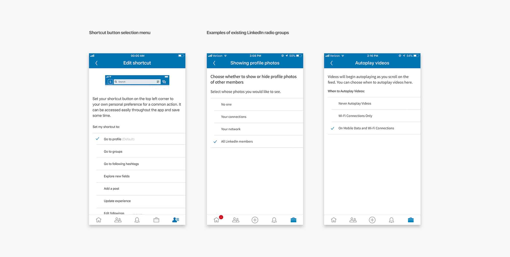

linkedIn.
improving navigation
LinkedIn is a powerful tool when it comes to networking, sharing work experience, and finding new jobs. But it seemed like the mobile app could be improved. From my experience as well as others, navigation didn’t seem ‘direct.’ Some features had to be dug out while some were placed in unnecessarily cluttering fashion.
Research: Looking for the problem
I first gathered users’ feedbacks on their experience with LinkedIn mobile app and organized them into an affinity digram. The user group that I interviewed consisted of 20 people: 8 college students (2 from each grade), 4 graduates looking for work, 6 normal 9-5 employees, and 2 employees working specifically in talent acquisition. This was to gather information from different demographics of people who use the LinkedIn mobile app.
The two main questions asked were: ‘what do you dislike about the current navigation?’ and ‘what improvements would you like to see?’ Though there were various responses, they could be grouped into two categories.
- Navigation buttons were disorganized and ununified.
- Navigation layout was not fitting for people with different priorities
Research: Analyzing Current Navigation
Navigation for the LinkedIn iOS app consists of a tab bar (bottom) and navigation bar (top). The tab bar consists of 5 tabs: Home, My Network, Add a post, Notification, and Jobs. There already is a problem here. ‘Add a post’ is an action that can already be accessed by a floating button. It only takes up space and clutters the tab bar which should be saved primarily for different pages. Even in the desktop version, it is not included in the bar. In the navigation bar, there is a search, message, and a hamburger menu. The signifier for the menu is a profile which can be misrepresenting.
Research: Navigation on Other Apps
I searched for apps that have more than 5 menu/tab items and analyzed how they organized the items. I didn't consider apps with 5 or less items since they can just fit them into tab bar.
They all utilized combination of tab bar and menu tab. The menu button is often placed in the top left corner or the most right position in the tab bar. The most right position in the tab bar seemed more versatile as it is more reachable and supported option B.
Brainstorming: Ideating + Sketching
I came up with different ideas to improve the navigation layout.- Emphasize the hamburger menu by putting the primary tabs into the menu and representing the menu button with a better icon so that people won't confuse it for the profile button
- Keep the current layout but move the menu down to the tab bar. Remove the 'Add to post' tab.
- Add a floating button that pops up with a menu of navigation items. It also opens up safe for more content viewing.
I decided to go with option B as it would be easier for users to adapt since it is similar to current navigation. While option A puts the items in a unified place, the menu button itself will then be in top left corner which will be hard to be accessed with thumb, thus reducing the accessbility. Option B conflicts with current floating action button for new message in messaging page as well as with floating button for new experience in profile page.
Brainstorming: UI Elements
I gathered navigation UI elements that were found in the current application and ordered them in the ranking of priorities provided by 20 people interviewed prior. I replaced 'add a post' with a shortcut as that was a feature that most people preferred.
Also, it did not make sense to include it in the tab when it can already be accessed through the floating tab in home page.
The 6 least prioritized elements (profile ~ settings) were to be placed into the menu item while the top 5 elements (home ~ menu) were placed in the tab bar. The placement did not change much for 'home', 'my network', 'messaging', 'jobs', and 'notifications'. 'messaging' was kept in the top right corner as it is the most popular place for messaging button in other applications like Facebook and Instagram. Thus, it was better to keep it there rather than to move it somewhere else. The other elements were just kept in the bar as those were the main priorities.
The 6 least prioritized elements (profile ~ settings) were to be placed into the menu item while the top 5 elements (home ~ menu) were placed in the tab bar. The placement did not change much for 'home', 'my network', 'messaging', 'jobs', and 'notifications'. 'messaging' was kept in the top right corner as it is the most popular place for messaging button in other applications like Facebook and Instagram. Thus, it was better to keep it there rather than to move it somewhere else. The other elements were just kept in the bar as those were the main priorities.
Visual Design: Menu Signifier

I had to choose an icon that would best represent the account menu. Option D seem to best show that this new menu holds access to not just profile but other miscellaneous items. Options A and B seemed too much of generic menu items while Option C would only signify the profile page. Option D seemed rather confusing as 'plus' sign tends to be more of an action.
Visual Design: Layout
The current menu that is accessed from the top right corner has no issue in terms of usability. The problem was just how it was accessed. I decided to adapt it to fit the new menu page by making it full width and removing the close button as that is no longer needed.
This would provide a familiar usability to the users. I kept the same background and accent colors as well as the extend button icon.
Visual Design: Setting placement
Settings could have been just added to the list of items, but since it is an important item, it felt best to include it as a floating tab that can be easily accessed.
I also decided to include a preview of the dashboard, which provides metrics of profile viewers and search appearances. This is similar to how Twitter displays followers and how Reddit displayers Karma points.
This seemed like a better use of space.
Iteration: Access to Shortcuts Setting
I realized I forgot to include a method for user to edit their shortcut preference. Because the shortcuts button is a new feature, there must be a way for the user to access the setting for it. Users should be able to find it easily without having to dig for it throughout the app.
Option A was the best option as it can be easily found. Option B did not seem too feasible as it was hard to find and the settings was more for LinkedIn's overall account information, not the application layout. This shouldn't be passed down to the settings on desktop. Though Option C would be a neat feature, users would have no way knowing it exists unless notified about it.

For the shortcut settings menu, I decided to adapt the existing design for the radio buttons group.
This enables a better UI flow throughout the application. The options were chosen from several suggestions provided by the people interviewed. They are ranked by how often people would use them.
Final Interaction
Demonstration
The animation below displays how the final interaction would work and shows how the shortcut menu would be used.